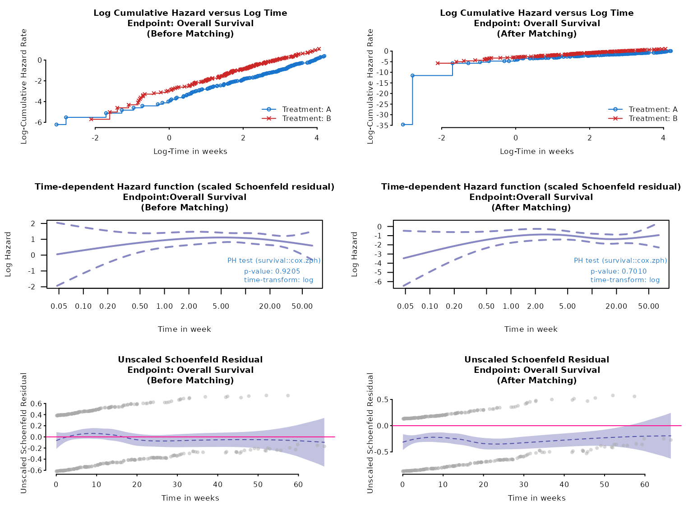

Testing PH assumptions
2025-05-23
Source:vignettes/testing_ph_assumptions.Rmd
testing_ph_assumptions.RmdIntroduction
Here we demonstrate briefly how we can test proportional hazards assumptions including weights for time-to-event endpoints.
Unanchored case
result <- maic_unanchored(
weights_object = weighted_sat,
ipd = adtte_sat,
pseudo_ipd = pseudo_ipd_sat,
trt_ipd = "A",
trt_agd = "B",
normalize_weight = FALSE,
endpoint_name = "Overall Survival",
endpoint_type = "tte",
eff_measure = "HR",
time_scale = "months",
km_conf_type = "log-log"
)
fit_surv <- result$inferential$fit$km_after
fit_cox <- result$inferential$fit$model_afterTo assess if the hazards are proportional to each other over time, we can check if the log cumulative hazard lines are parallel.
# Log-log plot
ph_diagplot_lch(fit_surv,
time_scale = "months", log_time = TRUE,
endpoint_name = "OS", subtitle = "(After Matching)"
)Another way is using the Schoenfeld residual.
At the subject’s failure time, the residual measures how the value of for the subject who fails differs from a weighted average of values for those still at risk. Weights depend on estimated HR for each subject at risk.
If the lines in Schoenfeld plots are flat, covariate effect are constant over time and proportional hazards assumptions are met. Alternatively, a non-significant p-value in Schoenfeld residual test suggests that there is no strong evidence for non-proportionality.
# Schoenfeld plot
ph_diagplot_schoenfeld(fit_cox,
time_scale = "months", log_time = FALSE,
endpoint_name = "OS", subtitle = "(After Matching)"
)
# Or set of diagnostic plots
ph_diagplot(
weights_object = weighted_sat,
tte_ipd = adtte_sat,
tte_pseudo_ipd = pseudo_ipd_sat,
trt_var_ipd = "ARM",
trt_var_agd = "ARM",
trt_ipd = "A",
trt_agd = "B",
trt_common = NULL,
endpoint_name = "Overall Survival",
time_scale = "week",
zph_transform = "log",
zph_log_hazard = TRUE
)
Anchored case
Similar tests can be done for the anchored case.
data(weighted_twt)
data(adtte_twt)
data(pseudo_ipd_twt)
ph_diagplot(
weights_object = weighted_twt,
tte_ipd = adtte_twt,
tte_pseudo_ipd = pseudo_ipd_twt,
trt_var_ipd = "ARM",
trt_var_agd = "ARM",
trt_ipd = "A",
trt_agd = "B",
trt_common = "C",
endpoint_name = "Overall Survival",
time_scale = "week",
zph_transform = "log",
zph_log_hazard = TRUE
)